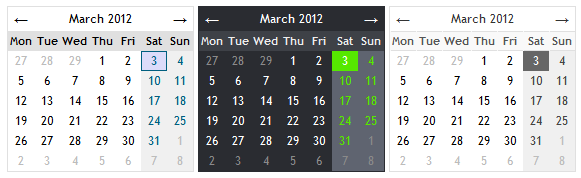

yaDataPicker - yet another datepicker

yaDataPicker - is a lightweight, customizable jQuery data picker plugin.
For support, suggestions and contributions, please visit github.
Features
- inline calendar rendering
- the first day of the week selection
- custom date format
- localization
- themes support
- date selection restrictions [dates from the past, end date]
How to use
Step 1 - Setup
yaDatePicker plugin uses the jQuery JavaScript library. So, in order to use it, include these two javascript files in header of your page:
<script type="text/javascript" src="js/jquery.js"></script>
<script type="text/javascript" src="js/yaDatePicker-1.0-min.js"></script>
Include the CSS file that contains the theme for the yaDatePicker plugin you want to use:
<link rel="stylesheet" type="text/css" href="css/default.css" media="screen" />
Step 2 - Activate
Create an input field or a div element to which you want to attach the datepicker:
<input type="text" id="date" >
or
<div id="calendar"></div>
Finally, attach a datepicker to the created field:
$("#date").attachDatePicker();
or render it to the created div element:
$("#calendar").attachDatePicker({inline:true});
Step 3 - Have fun!
I would appreciate your feedback!
Options
var options = {
inline:false, // a boolean parameter that tells if date
// picker should be attached or rendered as inline calendar
firstDay:0, // the first day of the week 0..6
navigation: true, // a flag to control appearance of the calendar navigation bar
allowPast: true, // a flag that restricts selection of dates from the past
endDate: -1, // a last date that is allowed to be selected. Could be a date or a number
theme: 'dp', // a name of datepicker theme. Two themes are included: dp and dark
format: 'd.m.Y', // a format of the date. Available options are:
// d - day, m - month, y - two digit year, Y - four digit year
onSelect: function(date){} // a callback function which is called when the user selects date
};
Example Theme
.dark {
display: inline-block;
border: 1px solid #2A2C31;
font-family: "Trebuchet MS", Tahoma, Verdana, Arial, Helvetica, sans-serif;
font-size: 12px;
background-color: #2A2C31;
}
.dark table {
border-collapse: separate;
}
.dark-cell {
padding: 1px;
text-align: center;
width: 22px;
line-height: 16px;
border: 1px solid transparent;
color: #FFFFFF;
}
.dark-cell-hover {
border: 1px solid #56e800 !important;
background-color: #beff9e !important;
color: #369600 !important;
}
.dark-no-day {
color: #999999 !important;
text-decoration: line-through;
}
.dark-yes-day {
cursor: pointer;
}
.dark-selected-day {
color: #ffffff !important;
background-color: #56e800 !important;
border-color: #56e800;
}
.dark-off-month {
color: #8a8a8a !important;
}
.dark-weekend {
background-color: #5f6470;
color: #56e800;
}
.dark-days {
font-weight: bold;
font-size: 11px;
}
.dark-days td {
background-color: #3E4147;
color: #ededed;
}
.dark-links {
line-height: 20px;
}
.dark-prev-link, .dark-next-link, .dark-current {
text-align: center;
color: #FFFFFF;
}
.dark-next-link, .dark-prev-link {
font-size: 14px;
cursor: pointer;
}
.dark-link-hover {
background-color: #8a8a8a;
}
Localization
If you need to translate the datepicker to another language simple include localization file in head of your page:
<script type="text/javascript" src="js/i18n/yaDatePicker-es.js"></script>
Examples
A simple datepicker with default settings.
$("#date-1").attachDatePicker();
A datepicker with "dark" theme, Monday is the first day of the week, selected date has "d/m/Y" format.
$("#date-2").attachDatePicker({
theme:'dark',
firstDay:1,
format: 'd/m/Y'
});
An inline calendar: the week starts with Monday, selection of old dates is disabled.